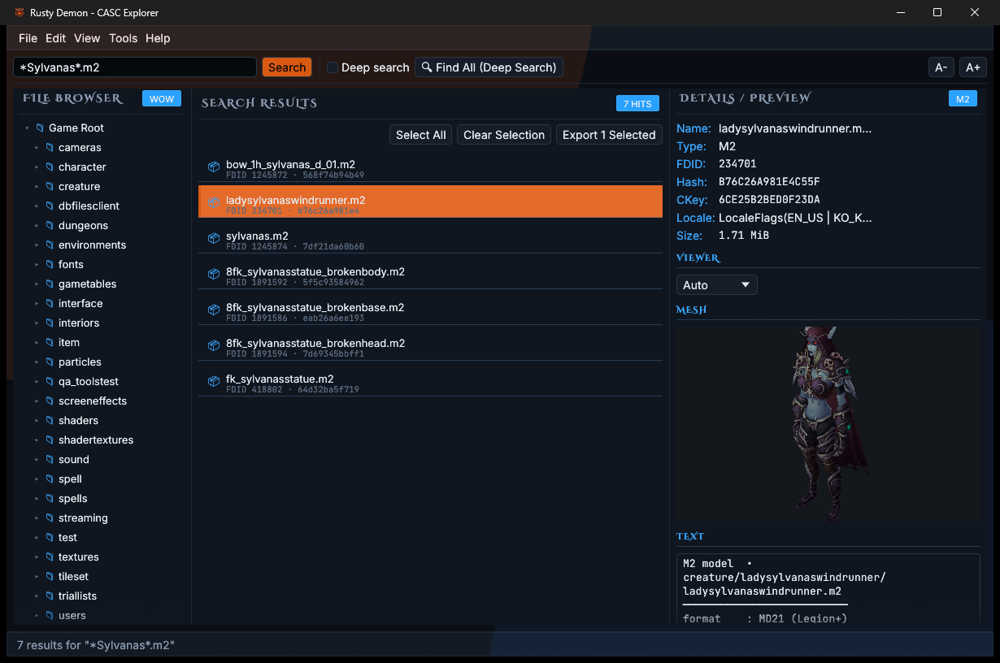
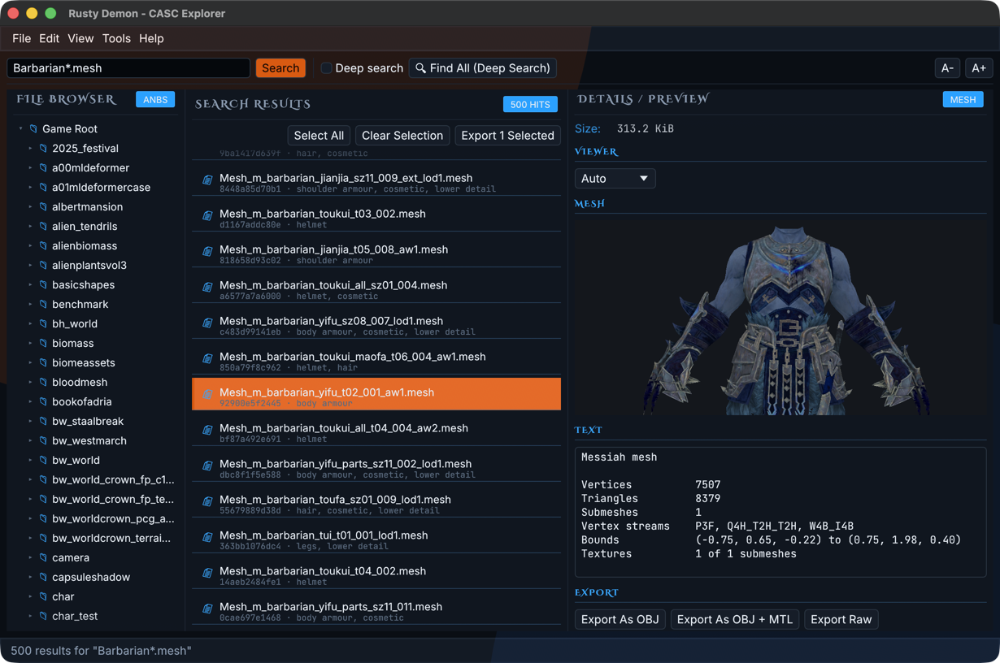
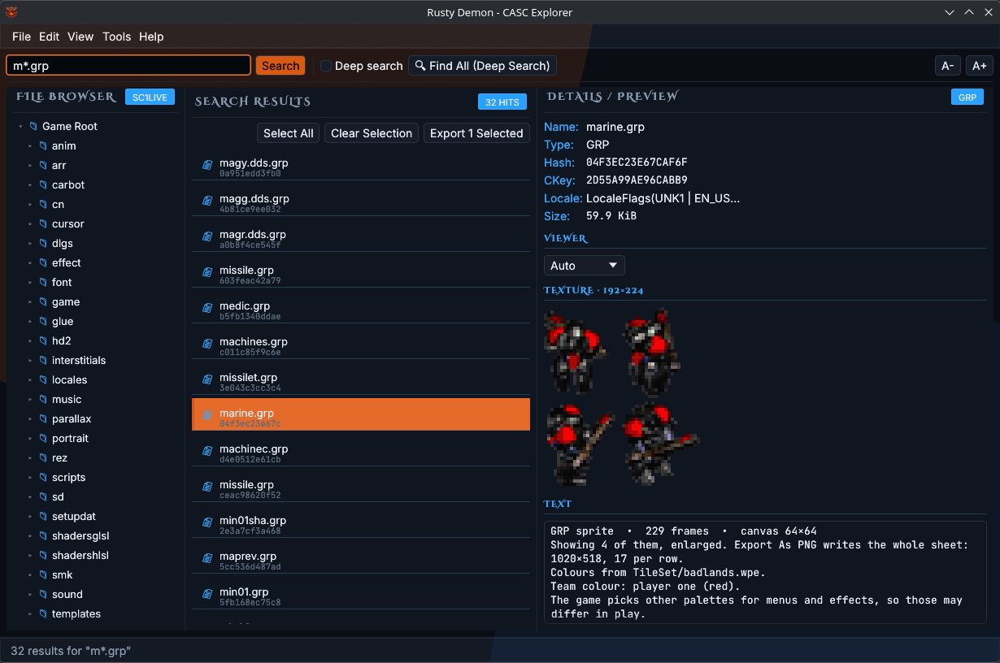
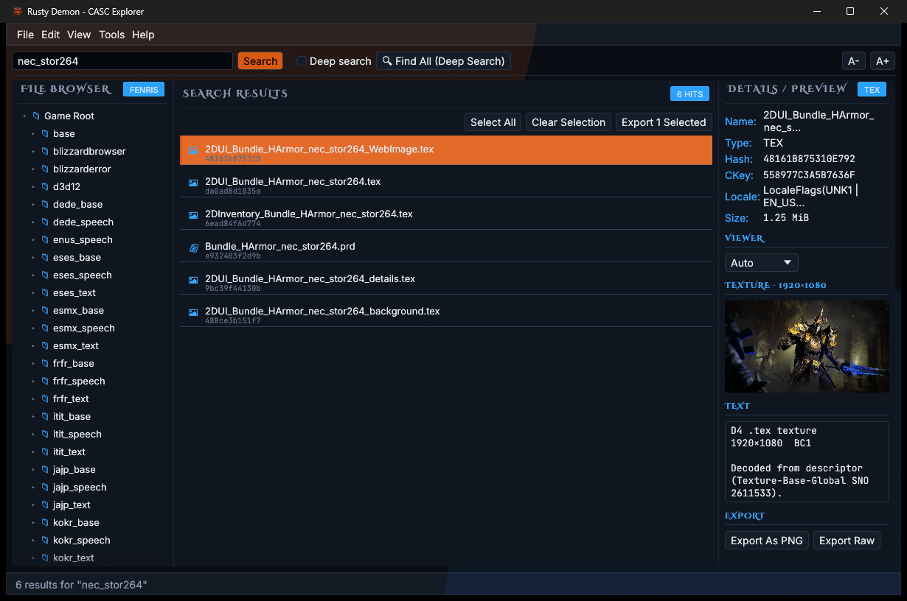
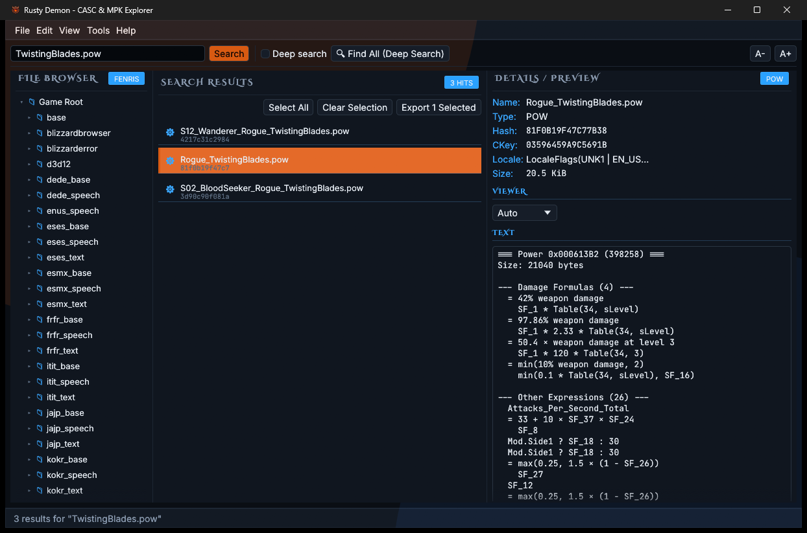

CASC and MPK explorer
See what is inside the game.
Rusty Demon opens the archives Blizzard games ship in. Browse every file, search by name, preview models and textures, and export them for Blender. It runs on Windows, macOS, Linux and Steam Deck.
Free and open source. For personal and educational use.

Games
Point it at an install folder
Choose File, Open Game Directory and pick the folder the game lives in. Rusty Demon works out which game it is. The tag beside each name is the product code the app shows once the game is open.
-
World of Warcraft
wowModels in the 3D viewer, BLP textures, and export of models with bones and animations.
-
Diablo IV
fenrisBattle.net and Steam installs. Textures, skill data and movies preview in the app.
-
Diablo III
d3Every file named from the game's own tables. Models, textures, text, and animated export.
-
Diablo Immortal
anbsReads the MPK packages this game uses. Meshes open painted with their textures.
-
StarCraft II
s2Textured models in the 3D viewer, DDS textures, and export with bones and animations.
-
StarCraft
s1Unit and building sprites preview as sheets of frames.
-
Diablo II: Resurrected
osiOpens the newer storage layout, with files spread over more than one data folder.
-
And more
heroprohsHeroes of the Storm, Overwatch and Hearthstone open for browsing, search and raw export.
Preview
Look before you export
Select a file and the right panel shows it: a model you can turn, a texture, a sprite sheet, or the readable form of a data file. Each kind of file brings its own export buttons.




Export
Into Blender with bones and motion
Models from World of Warcraft, Diablo III and StarCraft II export as glTF, a format Blender opens directly. The file carries the mesh, its textures, the skeleton, and the game's animations as separate actions.
Models
glTF with skeleton and animations, or plain OBJ with a material file when you only need the shape.
Textures and sprites
PNG, decoded from BLP, DDS and the Diablo texture formats.
Movies and everything else
Diablo IV movies export as Bink video. Any file at all exports raw, exactly as stored.
Search
Find one file among millions
Search covers the whole archive at once, whichever folder is open. Type part of a name, or a pattern such as *.wmo or textures/*.tex.
Deep search goes one step further and looks inside container files, so a Diablo IV skill can be found by a word in its data.
Command line
Batch export without the window
The source also builds rustydemon-cli for scripts: pick files by path, pattern or file ID and write them to a folder.
$ cargo run --release -p rustydemon-cli -- \ --archive "~/.steam/steam/steamapps/common/Diablo IV" \ --path "**/cinematics/*.vid" \ --output ./out
Steam Diablo IV
The Steam build opens too
Diablo IV on Steam stores its files in a different layout from the Battle.net version, one that older archive tools were written before. Rusty Demon reads both and tells them apart on its own.
| Battle.net | Steam | |
|---|---|---|
| Starts from | .build.info | Data/.build.config |
| Archive files | data.NNN | meta.dat and payload.dat pairs |
| Where a file is | Looked up in index files | Packed into the file's own key |
Download
Get Rusty Demon
Pick your system. Each link goes to the latest release.
First launch
The installers are not code-signed yet, so the system warns once.
Windows: on the SmartScreen prompt choose More info, then Run anyway.
macOS: right-click the app and choose Open, then Open again.
Check the download
Every release lists a SHA-256 checksum for each file and carries GitHub's signed record that it was built from the tagged source. With the GitHub CLI:
$ gh attestation verify <file> \
--repo HoldMyBeer-gg/rustydemon
Build it yourself
With the Rust toolchain installed:
$ git clone https://github.com/HoldMyBeer-gg/rustydemon $ cd rustydemon $ cargo run --release -p rustydemon